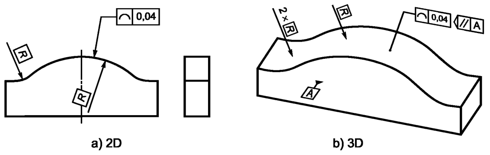

Выявленная линия на нормируемой поверхности в любой плоскости, параллельной плоскости проекции, на которой указан допуск, см. рисунок (а) ниже или параллельной базовой плоскости А, см. рисунок (b) ниже, должна располагаться между двумя эквидистантными линиями, являющимися огибающими семейства окружностей диаметром 0,04, центры которых расположены на заданном номинальном профиле.
Поле допуска ограничено двумя линиями, являющимися огибающими семейства окружностей, с диаметрами, равными значению допуска t, и центрами, расположенными на номинальном заданном профиле, см. рисунок ниже
а - любое расстояние; b - плоскость, перпендикулярная к плоскости чертежа, см. рисунок ниже